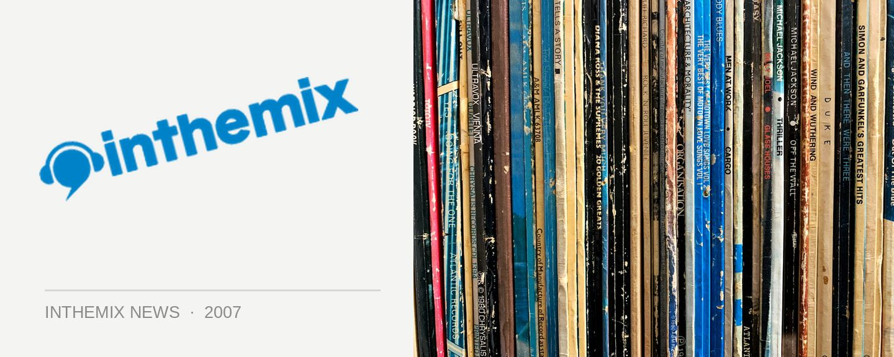

MySpace gets rolled by Facebook
It was only last year that MySpace was the hottest kid on the social networking block. But how quickly things can change, because according to the latest net usage figures, competitor Facebook has crept up behind and gone for the kill, with its share of the pie tripling in the past several months.
MySpace already has a massive existing user base, with one in three Australians that visit social networking websites still picking it as their destination. But its future is looking a tad grim: its market share has dropped by 5 percentage points, and meanwhile that Facebook sure is getting feisty. Winning favour for its ease of use and comprehensive functionality, it has more than tripled its market in the 10 weeks leading up to the middle of October, according to the SMH.
The shift away from MySpace reflects trends that have already been noticed in the UK, where a recent Nielsen/NetRatings study pinned Facebook as the reason for the recent drop in traffic to the site. But according to the local findings, this desertion is even more pronounced in Australia than it is the US or Britain and worst of all, it seems that it’s becoming more and more popular with mums and dads. Not the best development for its credibility.
“The people that tend to go there now are more like middle Australia,” says Tessa Court, head of marketing for Hitwise. Meanwhile, Facebook is becoming increasingly trendy. “It’s where more of the thought leaders and influentials go.”
MySpace however has dismissed all speculation on its impending doom, with general manager Rebekah Horne emphasising the fact that it still holds around 4.2 million members. “It’s swings and roundabouts. It’s probably going to go up next week,” she said with heavy conviction.
And the soap opera continues. Is MySpace doomed to be the embarrassingly uncool domain of mums and dads, while all the hipsters delete their accounts and turn to Facebook? Stay tuned.